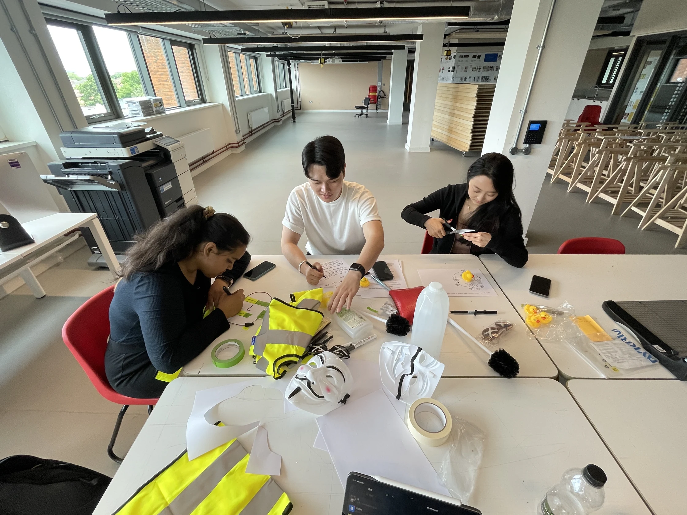
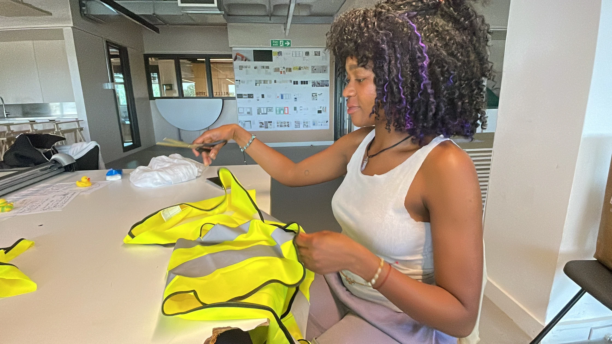
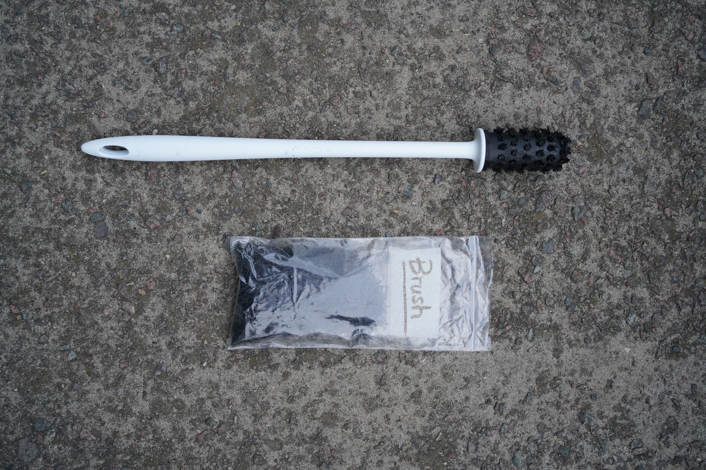

Reframing Rebellion：日常物件的符号转译与实验出版
当一件普通日常消费品脱离原有的实用功能与使用语境，观者对它的认知是如何被改写的？
《Reframing Rebellion》是我于 2023 年在金斯顿大学（Kingston School of Art）完成的硕士毕业项目（Distinction）。项目以安全背心、塑料桶、马桶刷、橡皮鸭、太阳镜等极其普通的日常消费品为研究媒介，结合符号学、物导向本体论（OOO）、物质文化研究以及 V&A 博物馆展览 Disobedient Objects 的策展思路，探讨当物件的外观、功能与所处语境发生迁移时，公共认知与象征意义如何被重新建构。区别于单向陈列历史资料的传统做法，我将整个项目的重心放在“观众参与与认知实验”上——从前期案例归类出发，历经黑色物件秩序对比测试、七人共创改造工作坊、二次去功能化观念摄影与三种阅读动线测试，最终落脚于 Risograph 独立出版物与参与式展陈构想。
认知与秩序实验
在正式改造物件之前，我先剥离了色彩与品牌标签的干扰，收集了一批纯黑色的日常消费品进行对照陈列实验：同样一组物件，在一张画面里被严谨地归入整齐网格，在另一张画面里则被无序堆叠在一起。通过对比观者在两种秩序下的第一联想，我验证了“陈列方式本身就在替物件发言”——整齐归类会强化工具属性与类别界限，而无序堆叠则更容易松动原有功能认知，激发新的隐喻解读。


七人参与式实验室工作坊
为了跳出设计师单一的预设视角，我策划并主持了一场七人跨文化背景参与的物件改造工作坊。在有限时间内，参与者围绕日常消费品自由展开剪裁、涂绘、拆解与身体互动——有人把塑料桶踩扁绑在脚底做成发声鞋，有人拆解安全背心只保留反光束带，也有人借用工具重构佩戴方式。现场观察清晰地表明：观众对物件的再创造既充满即兴想象力，又高度依赖他们原有的生活经验与语境提示，这一发现直接决定了后续出版物“保留背景线索但不替读者下结论”的编辑原则。


物件脱功能化与观念摄影
延续工作坊的现场启发，我对这批消费品进行了更彻底的去功能化干预与观念摄影实验：为塑料桶穿入鞋带置入草地，将剪离的马桶刷毛封装进标有 BRUSH 的透明标本袋，把安全背心通体喷涂银漆使其硬化直立，或用铝箔完全包裹太阳镜。随着实用功能被一步步剥离，物件逐渐从“日用品”滑向“纯粹视觉符号”，但就像杜尚的小便池依然依赖观者对原用途的残留记忆一样，保留恰到好处的原语境线索，才能让物件的陌生化产生真正的思辨张力。



Risograph 独立出版与展陈构想
最终，我将物件背景线索、实验摄影与工作坊记录编入独立出版物。在装帧与编排阶段，我先后测试了教科书式的三分法与百科档案法，但二者都过于刻板，反而削弱了观者主动联想的空间；因此最终改由图像拼贴与视觉节奏驱动的非线性排序，并借用粗粝、高噪点的视觉质感制作了黑白手绘荧光笔版与绿粉双色 Risograph 两版实体刊物。与之配套，我还提出了结合改造实物、海报与观众现场动手尝试的互动展陈方案，让出版物与展台共同构成一个开放的解读现场。


项目总结
《Reframing Rebellion》并不试图给日常物件贴上唯一正确的符号标签，而是把“改变感知的同时保留指涉”作为策展与设计实践的起点。从秩序对比测试到共创工作坊，再到非线性的低技术独立出版，整个过程验证了同一件事：好的展陈与编辑不是替观众讲完标准答案，而是搭起一个足够克制、留有缝隙的媒介平台，邀请观众在观看与动手参与中形成自己的判断。